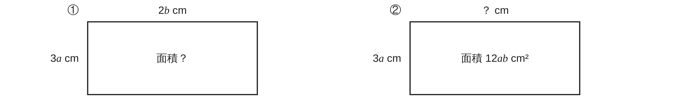

ペア学習
第4時 文字式どうしのかけ算・わり算を、考えて計算しよう
第3時の重要語句から、1人1問ずつ、言葉を選んで出題する。
聞かれた人は、その言葉の意味を、自分の言葉で言う。
分配法則
逆数
通分
分数の形の式
式の計算 第4時 文字式どうしのかけ算・わり算を、考えて計算しよう
めあて
第4時 文字式どうしのかけ算・わり算を、考えて計算しよう
学習課題
① 縦が 3a cm、横が 2b cm の長方形の面積を、式で表そう。
② 面積が 12ab cm² で、縦が 3a cm の長方形の、
横の長さを式で表そう。

【自分の考え】①②の計算のしかたを、図や式で書こう。ペアと見くらべよう。
式の計算 第4時 文字式どうしのかけ算・わり算を、考えて計算しよう
学習課題のまとめ
第4時 文字式どうしのかけ算・わり算を、考えて計算しよう
① 面積を表す式 ② 横の長さを表す式
① 縦 3a cm、横 2b cm
3a×2b＝3×a×2×b
＝(3×2)×(a×b)
＝6ab（cm²）
係数どうし、文字どうしを、
それぞれかける。
② 面積 12ab cm²、縦 3a cm
12ab÷3a＝
12ab
3a
＝4b（cm）
分数の形にして、約分する。
（□×3a＝12ab の □ を考えてもよい）
（例）ペアの考え
縦 a・横 b の小さな長方形が 6個 3a×4b＝12ab だから 横は 4b
式の計算 第4時 文字式どうしのかけ算・わり算を、考えて計算しよう
ことば
第4時 文字式どうしのかけ算・わり算を、考えて計算しよう
単項式の乗法 … の積に、 の積をかける。
3a×2b＝(3×2)×(a×b)＝6ab
単項式の除法 … の形にして、 する。
12ab÷3a＝
12ab
3a
＝4b
または、わる式の をかけて計算する。
同じ文字のかけ算は、 で表す。 a×a＝a²
「÷2x」は、2x 全体でわることを表す。
式の計算 第4時 文字式どうしのかけ算・わり算を、考えて計算しよう
ことば
第4時 文字式どうしのかけ算・わり算を、考えて計算しよう
単項式の乗法 … 係数の積に、文字の積をかける。
3a×2b＝(3×2)×(a×b)＝6ab
単項式の除法 … 分数の形にして、約分する。
12ab÷3a＝
12ab
3a
＝4b
または、わる式の 逆数 をかけて計算する。
同じ文字のかけ算は、累乗で表す。 a×a＝a²
「÷2x」は、2x 全体でわることを表す。
式の計算 第4時 文字式どうしのかけ算・わり算を、考えて計算しよう
例題
第4時 文字式どうしのかけ算・わり算を、考えて計算しよう
次の計算をしよう。
（1） x×(− y)
（2）(− a)²
（3） x²÷ x
【乗法】（1）（2） 【除法】（3）を、分数の形にして約分する。
式の計算 第4時 文字式どうしのかけ算・わり算を、考えて計算しよう
例題 解答
第4時 文字式どうしのかけ算・わり算を、考えて計算しよう
乗法
（1）4x×(−3y)＝4×(−3)×x×y＝−12xy
（2）(−2a)²＝(−2a)×(−2a)＝4a²
除法
（3）6x²÷2x＝
6x²
2x
＝3x
（わる式が数のときは、逆数をかけてもよい） 12x÷4＝12x×1⁄4＝3x
式の計算 第4時 文字式どうしのかけ算・わり算を、考えて計算しよう
考えよう
第4時 文字式どうしのかけ算・わり算を、考えて計算しよう
8ab÷(−
2
3
a) を、「−
3
2
a をかける」として計算した人がいた。
この計算は、正しいだろうか。確かめて、正しい計算のしかたを説明しよう。
①
この計算は、正しいだろうか。どうやって確かめたか、書こう。
②
8ab÷(−
2
3
a) を、正しく計算しよう。
③
まちがえないための、くふうを書こう。
発展
（解き終わった人は）
単項式×単項式の次数は、もとの 2つの単項式の次数と、
どんな関係があるだろう。例をいくつか計算して、考えよう。
式の計算 第4時 文字式どうしのかけ算・わり算を、考えて計算しよう
振り返り
第4時 文字式どうしのかけ算・わり算を、考えて計算しよう
今日のめあて
係数
累乗
約分
逆数
分数の形
今日わかったことを、ペアで1つずつ言い合おう。
ワークシートと演習プリントを出そう。（未完成でも出す）
式の計算 第4時 文字式どうしのかけ算・わり算を、考えて計算しよう